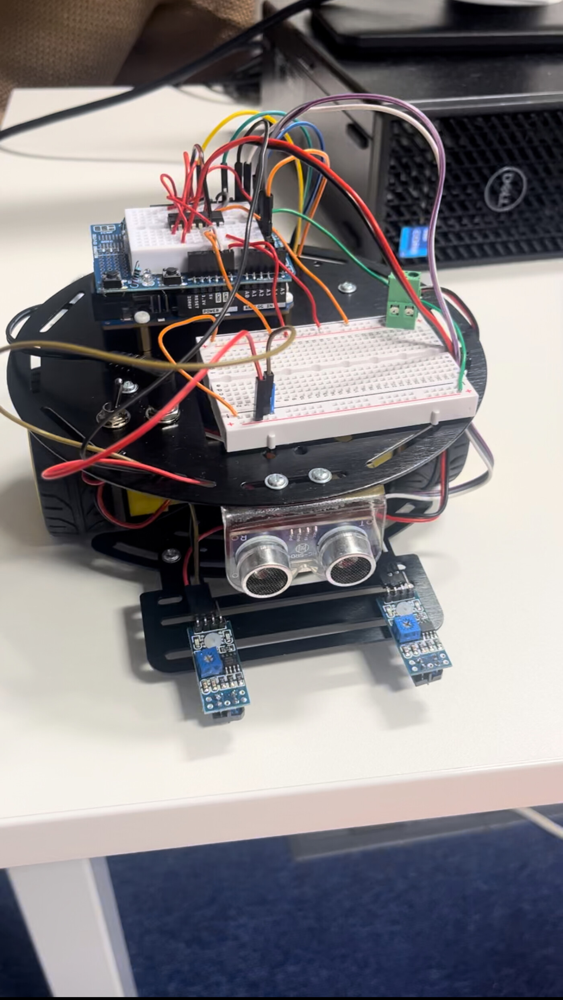
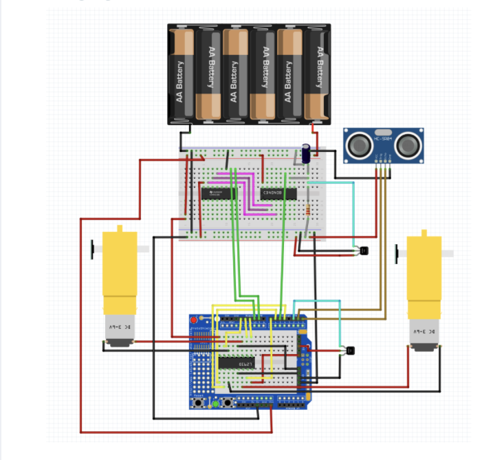
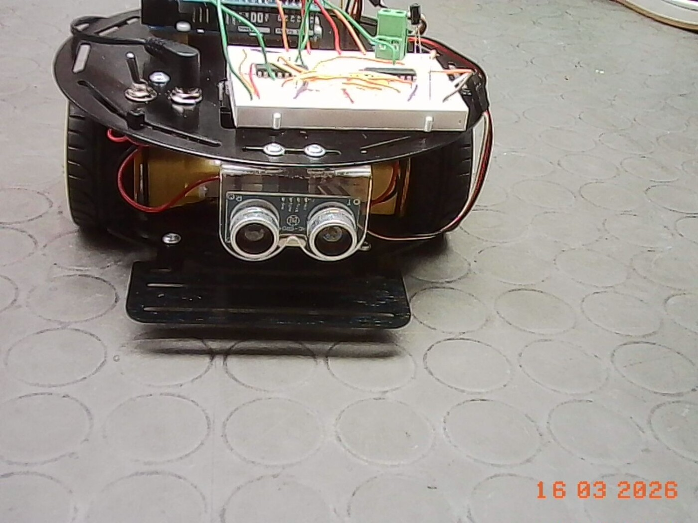
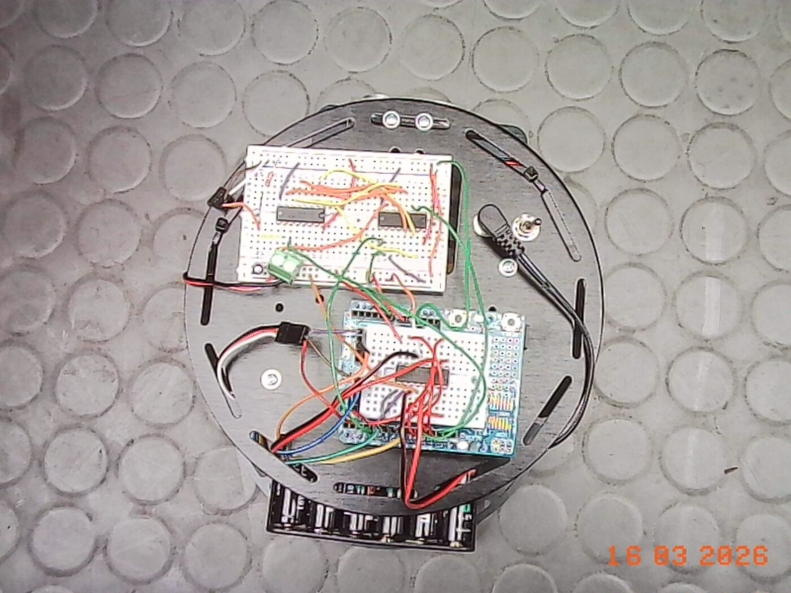

Autonomous Buggy GROUP PROJECT
An autonomous two-wheel robotic vehicle combining embedded control, wireless communication, ultrasonic sensing, wheel-encoder feedback and closed-loop PID control — built for 2E10 Engineering Design IV at Trinity College Dublin.
Project Overview
Working as part of an engineering team, I helped develop an autonomous two-wheel robotic vehicle capable of navigating independently, detecting obstacles, measuring its own movement, and operating under closed-loop control.
The project progressed through three increasingly complex stages — Bronze, Silver and Gold — each adding further sensing, communication and control requirements. The brief called for a buggy that combines environmental sensors with a control system to interpret that data and act on it.
System Architecture
The Arduino Uno R4 WiFi sat at the centre of the system — its exposed I/O made it straightforward to wire in sensors on one side and motor control on the other, while its onboard WiFi handled communication back to a laptop.

Full circuit — battery pack, CD4040 encoder counter, ultrasonic sensor, H-Bridge and both DC motors wired to the Uno R4.Development
Autonomous Navigation
Independent DC motor control combined with ultrasonic obstacle detection. The buggy could:
- Navigate the course in both directions
- Detect obstacles and stop before collision
- Start and stop remotely
- Communicate vehicle events wirelessly
Encoder-Based Positioning
Added wheel-rotation feedback — a CD4040 binary counter reading pulses from a hall-effect encoder, shifted out over a register the Arduino could read directly — to move from basic autonomous behaviour toward measurable, closed-loop-ready motion.
The spec called for an analogue wheel-rotation measurement to be checked against a digital Arduino reading before trusting encoder data to navigate the course.
Closed-Loop Control
The final stage introduced PID control, turning the buggy into a proper closed-loop system, with two modes:
- Speed Control — hold a reference speed set via the GUI
- Object Following — track an object at a safe, steady distance
Distance and event data were transmitted wirelessly throughout — the core requirement of the Gold Challenge.
The Control Loop
The Gold challenge's speed control ran off a simple PID loop, comparing a piecewise reference speed profile against the actual speed measured from the wheel encoder:
float Kp = 2.0;
float Ki = 0.3;
float Kd = 0.1;
float computePID(float ref, float actual, float dt) {
error = ref - actual;
integral += error * dt;
float derivative = (error - prevError) / dt;
float output = Kp * error + Ki * integral + Kd * derivative;
prevError = error;
return output;
}
int timePoints[] = {0, 10, 30, 40, 45};
int speedRefs[] = {20, 30, 10, 20, 10};
Every run logged a mean-squared error between reference and actual speed, printed once the 60-second run finished — a straightforward way to quantify how well the controller was actually tracking, rather than just eyeballing it.
Engineering Highlights
Embedded Control
Arduino / C++ software integrating sensing, decision-making and motor actuation.
Wireless Communication
WiFi link between the Uno R4 and a laptop-based control interface.
Sensor Integration
Ultrasonic ranging and wheel-rotation feedback feeding autonomous behaviour.
PID Control
Closed-loop speed and following-distance control for the Gold Challenge.
Electronics
H-Bridge motor control plus supporting analogue and digital circuitry.
GUI Development
Processing-based interface for command, monitoring and vehicle feedback.
This project shaped how I understand mechanical, electronic and software systems working together as one mechatronic whole — going from testing individual components in isolation to integrating, debugging and validating a buggy that actually had to work, end to end, on the day.

